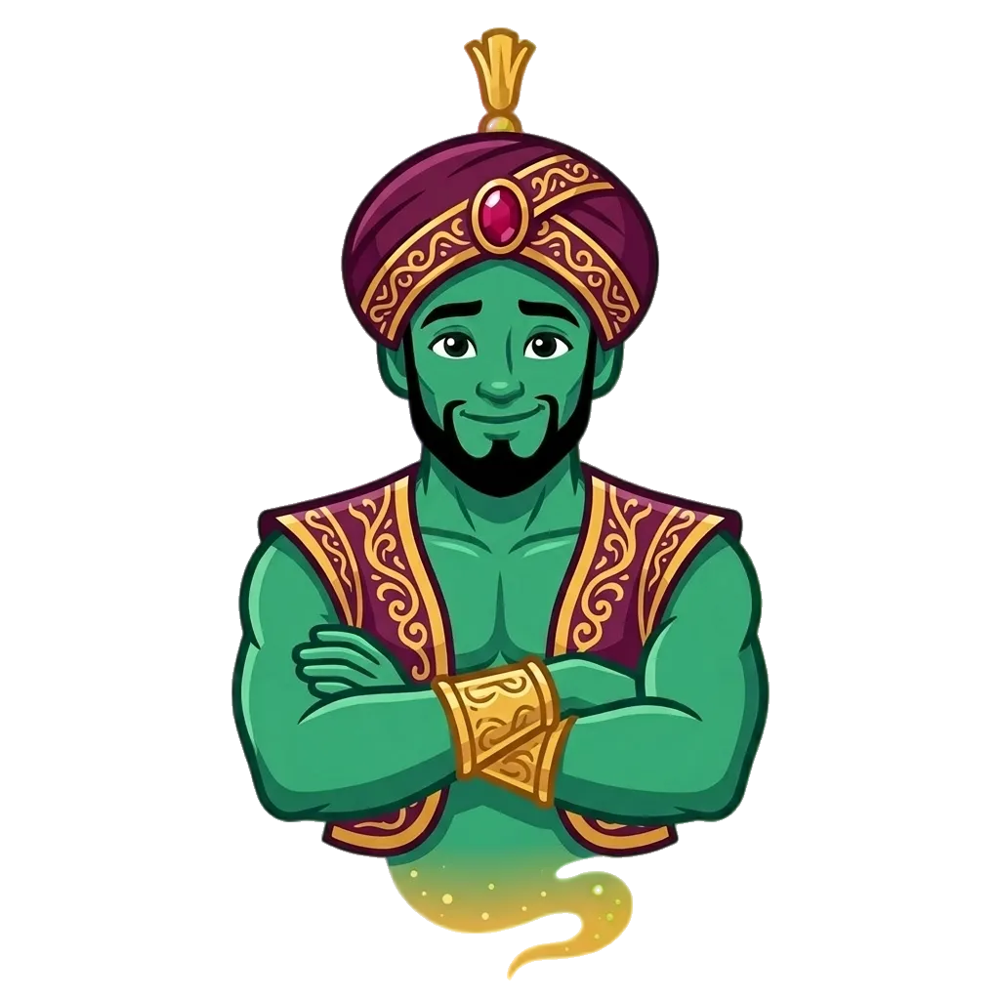

Clean hand-coded SVG of the concept from the Ideogram image. Two-color, bold silhouette, favicon-safe. Primary version has a tassel; simplified version drops it for 16–32px use.
The full mark with tassel. Stays crisp down to about 32px.
Tassel and shadow removed. Just cap + turban + band + gem. Maximum readability at tiny sizes.
Side by side — same palette, same visual DNA (plum turban, gold band, ruby gem). They feel like one system.

Tell me: ship this, or what to adjust? (e.g. different gem shape, no tassel anywhere, rounder turban,
taller cap, different proportions.) Once you approve I'll write the final SVGs into
saps/public/brand/logo-mark.svg and logo-mark-simple.svg.